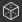

The 3D View helps you view and understand your materials with custom meshes and rendered PBR materials.
Like with all Substance 3D Designer Windows, it works together with other windows through right-click menu options and drag-and-drop operations. The 3D view also provides two main methods of rendering: fast, realtime OpenGL visualisation, with fluent smooth interaction, and high-quality raytraced renders with Iray.
In this page

navigation
The 3D View camera and environment may be manipulated in three ways:
- Orbit: LMB+Drag
- Pan: MMB+Drag / Ctrl+RMB+Drag
- Zoom: Scroll using MouseWheel / RMB+Drag
- Rotate environment: ⇧+RMB+Drag
- Focus on a selected mesh: F (focuses on entire scene if there is no selection)
- Orbit point light 1: Ctrl+⇧+LMB+Drag
- Move point light 1 closer to/away from origin: Ctrl+⇧+RMB+Drag
- Reset camera orbit position: R
- Reset camera orbit position and properties: ⇧+R
Using a trackpad (macOS only)
- Orbit: Two-finger swipe
- Pan: ⇧+Two-finger swipe
- Zoom: Two-finger pinch / ⌘+Two-finger swipe
- Rotate environment: ⇧+Two-finger swipe
Each of the zooming methods is inverted with the other:
- Mouse wheel up pulls the scene closer
- RMB and drag up pushes the scene away
The zoom direction can be inverted in the Preferences.
Select and focus
You can interact with meshes directly in the viewport:
Hold ⇧ and click LMB on a mesh to select a mesh. Selected meshes have a blue outline.
Press F to focus on a selected mesh. Focusing a mesh moves the camera to frame it and orbit around it.
Click RMB while a mesh is selected to access its material actions in a contextual menu.
Press Escape to unselect. The cursor does not need to be on the mesh.

Select, focus, unselect

Select, contextual menu
CHANGING THE environment LIGHTING
Designer works with image-based lighting (IBL) by default. A high-dynamic range bitmap is used to render environment lighting.
You can rotate this environment around your 3D object, or you can load either preset, or custom HDR light environments. Please note that your HDR images shoud use an equirectangular projection and have a precision of 32-bit floating point.
⇧+RMB+Drag rotates the environment in the 3D view.
To set a precise rotation, use Environment > Edit in the top 3D View toolbar and change the Rotation angle slider in the properties window.
To use a preset HDR light environment, click the HDRI environments section of the 3D View category in the Library, and then drag and drop any of the icons to the 3D view.
To use your own, custom HDR light environment, import an HDR image by dragging and dropping the file into a package in the Explorer Window (Link the file when prompted). Then drag and drop the resource, choose Latitude/Longtitude Panorama as the target.
Point lights
Go to Lights > Edit properties to toggle point lights in your scene.
Point light 1 can be moved around the scene's origin by holding LMB or RMB and dragging in the viewport in Lighting mode. 
While in Camera mode  , you can also temporarily switch to Lighting mode by hold the Ctrl+⇧ keys in combination with the mouse buttons.
, you can also temporarily switch to Lighting mode by hold the Ctrl+⇧ keys in combination with the mouse buttons.

Substance graphs
You can view entire materials as a complete material in the 3D View. This is the most common way to work, and will match the usage attributes on output nodes , to the relevant texture slots of the 3D view material. That means your outputs need to be set correctly (using Templates ensures this is the case), and that you selected material/viewport shader supports
You view all of a graph's outputs by clicking RMB an emtpy area in the Graph view, and choosing the View Outputs in 3D View option in the contextual menu.
You can also view a graph's outputs without having to open it, by clicking RMB on a graph resource in the Explorer dock and choosing the View Outputs in 3D View option in the contextual menu.
As an alternative to the graph's contextual menu, you can achieve the same result by dragging the graph from the Explorer dock to the 3D View.
When loading a graph, its outputs are automatically applied in the 3D View by default. You can disable this behaviour in the Preferences. Go to Edit > Preferences > Graph > Common and uncheck the View outputs in 3D view when opening a graph option.
Multiple Material Slots
If you use custom meshes with more than one single material, you'll be asked to choose what material slot to assign the material to. With any of the above methods, click a slot to confirm your choice. For more information on Materials an their assignment, read the detailed section below.

Individual node/graph output
You can view just a single output in any available material channel in the 3D View. This is less commonly used, but good for previewing quick tests or individual nodes with no output.
You can view any node, not just output nodes, by right clicking it in the Graph view, and choosing View in 3D View. You'll be shown a list with available channels to assign the node to. Click any to confirm.
You can also use RMB to drag and drop any node from the Graph view to the 3D View. You'll be shown a list with available channels to assign the node to. Click any to confirm.
You can view any individual graph output by expanding the graph resource in the Explorer dock, and using LMB to drag that output to the 3D View. You will be shown a list with available channels to assign the node to. Click any to confirm.

Designer offers a dozen preset meshes. These meshes have uniform, useable UV coordinates and serve most scenarios for tiling textures. Importing and viewing your own 3D meshes is also possible.
Pick any of the default meshes through the Scene dropdown menu in the top bar.
For custom 3D scenes, go to the Working with 3D scenes section.

There are a few different shaders available by default in Designer, and each shader has options beyond just texture channels. They can be configured individually.
Keep in mind shaders are different across Designer's 3D renderers and only settings marked with a 'Common' label will carry over when switching renderers.
To change the current shader, go to 'Materials' menu then open the submenu for the material you wish to edit.
For example, to adjust the 'Height scale' property for the 'Default' material in the 'Plane (hi-res)' scene, go to 'Materials > Default > Edit properties'. Then find the 'Height scale' property in the Properties dock.
Shaders can be reset using the 'Reset material' or 'Reset to scene state' actions in the submenu. If you were viewing Substance graph outputs in the 3D view, you will need to reapply them again.
The 'Tessellation factor' property varies according to the selected 3D renderer:
- Rasterizer/GPU Pathtracer: Located in the renderer settings (Renderer > Edit settings), impacts the entire scene.
- OpenGL: Located in the material properties, impacts the material.
- Iray: Located in the mesh properties (Select a mesh element in the Scene browser), impacts the mesh.

Learn about exporting 3D scenes in this page.
Export tessellated mesh (OpenGL renderer only)
You can export the mesh from the 3D View to a file in the OBJ, FBX or PLY formats. If tessellation displacement is enabled, the subdivision of the geometry is baked into the exported mesh.
However, the vertex normals of the original mesh may not match its new displaced shape, which means the displaced mesh may not render correctly. You can manage this in two ways:
- Use the mesh normal map which will provide the correct normals
- Recompute the mesh normals on export using the mesh normal map, which means these normals are baked into the exported mesh and the normal map is no longer necessary
To export the 3D View mesh, go to Scene > Export tessellated mesh..., set your choice regarding normals recomputation, then select a location, name and file format for the exported mesh.
This feature is not available on macOS.
If the original mesh has multiple materials and/or UV sets, these will be merged into one.
The duration of the export process and resulting file size depend on the mesh triangle count and tessellation factor. High tessellation factor values can result in instability depending on the GPU's onboard memory pool.
That being said, the vertex count of the tessellated mesh should be in the same range as the pixel count of the height map.
Having a mesh more dense than the height map can make for a slightly smoother mesh when using Phong tessellation, yet you should aim for reliably getting the mesh exported with the required height map detail first, and then refining the exported mesh in other software if needed.
TDR (Windows only)
This feature requires that the Timeout Detection and Recovery (TDR) match the recommended values in this page of our documentation, as stated in Designer's Technical requirements.
The menu bar provides 7 menus with options related to the 3D View. below is an overview of all options available.
The Scene menu deals with the geometry (3D Resource) shown and with 3D view states. 3D Resource sare just the mesh, Scene states are lights, camera, and related settings, and can also contain the mesh alongside.

Edit: Loads scene options in the Properties panel. Lets you toggle visibility of the 3D Mesh.
Standard primitives: Shows any of the below simple 3D meshes in the 3D View.
- Cube
- Cylinder
- Hollow Box
- Inner Box
- Plane
- Plane (hi-res)
- Sphere
Extended primitives: Shows any of the below 3D meshes in the 3D View.
- Cloth
- Mat Ball
- Rounded Cube
- Rounded Cylinder
- Sphere 2 tiles
- Torus
Display UV's in 2D View: Enables the display of the UVs for the currently selected mesh as an overlay in the 2D View .
Create 3D resource from current scene...: Creates a new 3D scene resource in a package out of the current scene.
Load state file...: Loads an externally saved scene state file (*.sbsscn). Does not replace the 3D mesh, only loads settings for 3D renderer, camera and lights.
Load state file with mesh...: Loads an externally saved scene state file (*.sbsscn). Loads settings for 3D renderer, camera, lights, along with its references 3D scene. .
Save state file...: Save the current state of the 3D view to a scene state file (*.sbsscn).
Save current state as default: Set the current state of the 3D view as as a scene state file to be used by default when creating new 3D Views. This file is loaded every time the 3D view is reset or intialised, and can be set in the Project settings.
Export scene: (Rasterizer/GPU Pathtracer renderers only) Exports the current scene as a flattened scene, where only the result scene is written and any references to the original scene are lost. The contents of the exported scene depend on the features supported by the selected export format.
Available formats: STL, FBX, GLB, GLTF, PLY, USDC, USD, USDA, USDZ, OBJ.
Export scene with layers: (Rasterizer/GPU Pathtracer renderers only) Exports the current scene as a layered scene, where all edits to the original scene are saved to separate files in a non-destructive workflow. This is only available for USD file formats.
Available formats are: USDC, USD, USDA.
Export tessellated geometry: (OpenGL renderer only) Exports the current scene with tessellation as raw geometry, see Export scene section.
Reset scene: Resets the 3D view to default.
Some software updates can change the way Scene state files are saved/loaded.
If the scene is not restored correctly from the file, it is recommended to manually set the desired state of the scene, and reexport the Scene state file.
The toolbar can be repositioned around the 3D View dock using the leftmost handle represented by three parallel lines.
Camera/Light toggle

This toggle lets you select which of the current camera or the scene lights should orbit around the scene when holding LMB and dragging the mouse in the viewport.
The camera is selected by default.

Selection tool

Selects individual meshes in the scene. Selected meshes have a blue outline in the viewport and are highlighted in the Scene browser.
A contextual menu is available for selected meshes and may be displayed by clicking RMB.
Meshes can also be selected in Camera or Light modes, by pressing Shift+LMB.
Scene browser
The Scene browser dock displays a hierachy of all elements in a 3D scene.
As a nested dock, it can be repositioned around the 3D View dock as well as undocked into a floating window.
Selecting the camera or environment objects created by Designer (listed in bold) will display their properties in the Properties dock. This is a convenient way to quickly access these settings instead of having to go through the menu bar.
Similarly, the properties of overriding material copies can be accessed by selecting them.
(OpenGL renderer only) Selecting an element of the scene in the list will replace it in the viewport by a wireframe overlay of that element.
The Scene browser and its features are covered extensively in the dedicated page.
Once an item in the tree is selected, you can use the arrow keys to quickly move the selection through the items.
In combination with the wireframe overlay mentioned above, this is handy to quickly identify objects in complex scenes.

Display options
Click the  Show environment button to toggle the display of the scene's environment. The same setting can be found in the Properties dock after going to Environment > Edit in the 3D View's menu bar.
Show environment button to toggle the display of the scene's environment. The same setting can be found in the Properties dock after going to Environment > Edit in the 3D View's menu bar.
Similarly, click the  Display options button to display button toggles equivalents for the settings found in the Display menu.
Display options button to display button toggles equivalents for the settings found in the Display menu.
 Axis: Toggles display of the 3D axis in the viewport.
Axis: Toggles display of the 3D axis in the viewport.
 Grid: Toggles the display of the world grid.
Grid: Toggles the display of the world grid.
 Scene stats: Toggles display of scene statistics, such as polycount, materials count, static meshes count, etc.
Scene stats: Toggles display of scene statistics, such as polycount, materials count, static meshes count, etc.
OpenGL renderer only
 Backface culling: Disabling this option lets you see a mesh face from both sides. The option works in combination with Wireframe.
 Bounding Box: Toggles display of the mesh' bounding box.
Bounding Box: Toggles display of the mesh' bounding box.
 Vertex tangent space: Displays the tangent, binormal and normal vectors for all vertices as colored gizmos.
Vertex tangent space: Displays the tangent, binormal and normal vectors for all vertices as colored gizmos.
 Wireframe: Toggles display of the mesh as a wireframe.
Wireframe: Toggles display of the mesh as a wireframe.
Color channels
You can display a single channel of the image using the  Color channels button. This opens a combo box letting you select which of the Red, Green and Blue channels should be displayed. The normal aspect of the image with all channels is restored by selecting the RGB option.
Color channels button. This opens a combo box letting you select which of the Red, Green and Blue channels should be displayed. The normal aspect of the image with all channels is restored by selecting the RGB option.
The icon of the Color channels button changes depending on the currently display channel(s).
Color space
For the most accurate representation of color, images are displayed by default in a color space which matches the one used by the monitor.
The available controls will depend on the color management mode set in the Project settings. Learn more about these controls in the Color management section in this page.